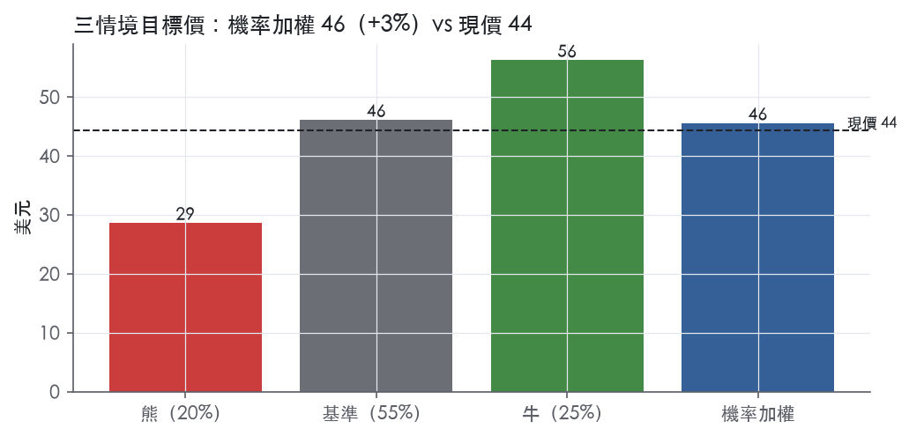
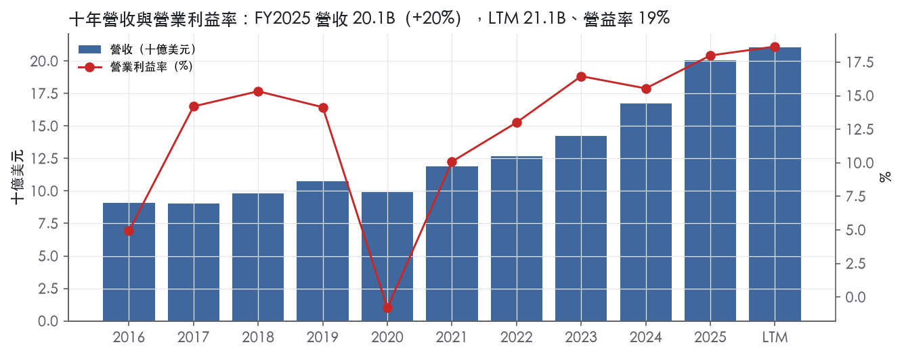
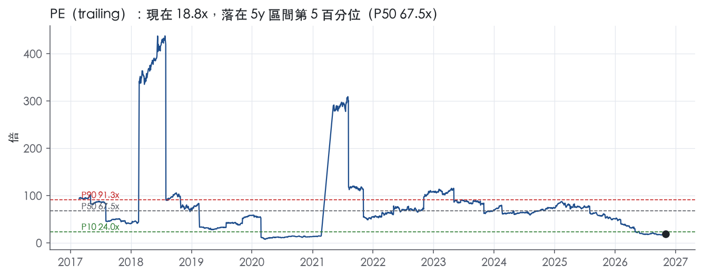
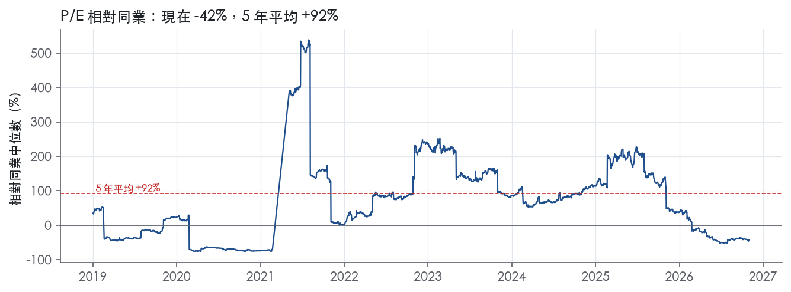
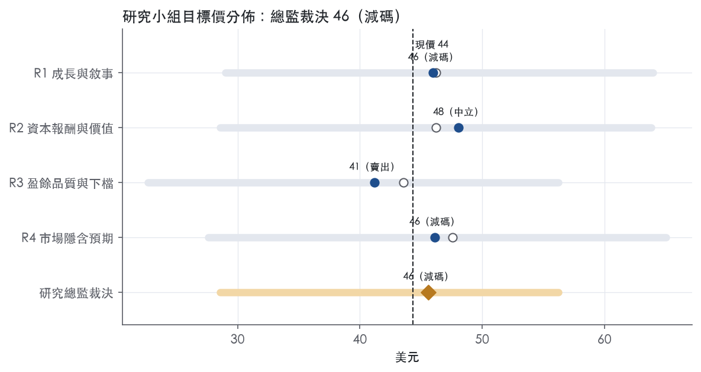
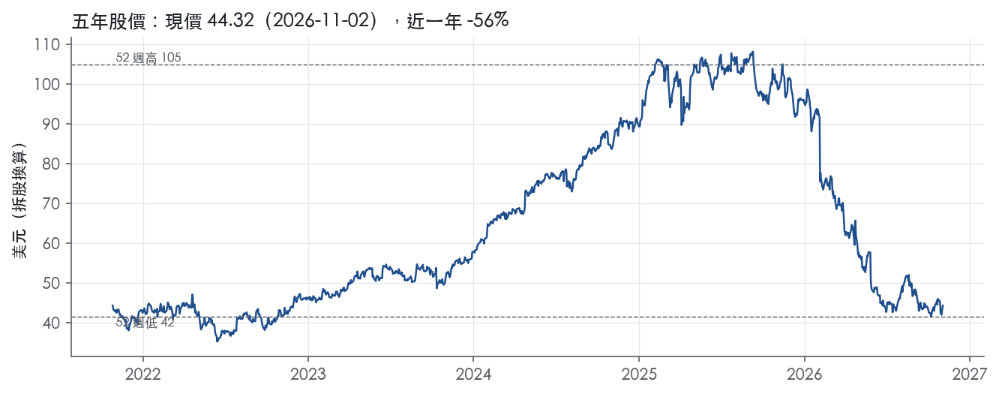

評等總表 › 醫療保健 › BSX
谷底配MDT平價，重估未到，減碼｜評等 減碼｜目標價 46
| 報告日 | 評等 | 目標價 | 當時股價 | 超額報酬 |
|---|---|---|---|---|
| 2026-11-02 | 減碼 | 45.60 | 44.32 | -6.7% |
| 2026-10-30 | 減碼 | 43.28 | 41.98 | -6.5% |
| 評等 | 減碼（邊界，鄰近中立） |
| 12 個月目標價 | 46 美元 |
| 現價 | 44.32 美元（2026-11-02） |
| 預期報酬 | 股價 +2.9%＋股息 0.0%＝總報酬 +2.9%；同業籃門檻 9.5%，超額 -6.7% |
| 估值方法 | P/E 25.0x，套在未來四季的EPS |
| 三情境 | 熊 29／基準 46／牛 56 |
| 研究流程 | 四位研究員兩輪辯論＋研究總監裁決 |
| 資料來源 | SEC EDGAR XBRL、Tiingo、FRED（全免費） |
谷底配MDT平價，重估未到，減碼（研究總監裁決，四位研究員兩輪辯論後）
評等 減碼（邊界，鄰近中立）｜12 個月目標價 46 美元（總監三情境機率加權 45 與研究員中位數 46 各半）｜現價 44.32（2026-11-02）
預期報酬：股價 +2.9%＋股息 0.0%＝總報酬 +2.9%。同業籃門檻 9.5%，超額 -6.7%，離中立的分界不到三個百分點，屬邊界評等（落在其他級距的機率約四成）。
估值方法：P/E 25.0x，套在未來四季的EPS。三情境：熊 29（20%）／基準 46（55%）／牛 56（25%）。
什麼會讓研究總監改變看法：FY2027 有機指引中點 ≥7% 且公司揭露交割後去槓桿時程，轉看多、倍數上調至 28x；FY2027Q1 有機仍衰退、交割後信評遭降或 2026 年報出現減損，基準改採熊驅動、倍數降到 MDT 以下。
| 過去四季（實際，FY2026Q3） | 未來四季 | 第 5–8 季 | 第 9–12 季 | |
|---|---|---|---|---|
| 營收（B） | 21.1B | 21.7B | 23.0B | 24.4B |
| 營收成長 | 8.9% | 3.0% | 6.0% | 6.0% |
| 營業利益率 | 18.7% | 17.0% | 18.5% | 18.5% |
| EPS（美元） | 2.36 | 1.85 | 2.16 | 2.30 |
| EPS 成長 | 26.2% | -21.7% | 17.1% | 6.6% |
| 每股股息（美元） | — | 0.00 | 0.00 | 0.00 |
| P/E（現價） | 18.8x | 24.0x | 20.5x | 19.2x |
| 股息殖利率（現價） | — | — | — | — |
過去四季為申報數字；預測為研究總監的假設、程式計算。倍數與殖利率都用現價計算，用來看現價對應各期獲利的高低。
| 項目 | 上次（2026-11-01） | 這次（2026-11-03） | 變動 |
|---|---|---|---|
| 評等 | 減碼 | 減碼 | ＝ |
| 機率加權目標價（美元） | 43 | 46 | +5.4% |
| 超額報酬 | -6.5% | -6.7% | -0.2 pp |
| 目標倍數 | 25x | 25x | — |
| 未來四季營收成長 | 2.0% | 3.0% | +1.0 pp |
| 未來四季營益率 | 17.0% | 17.0% | +0.0 pp |
| 未來四季 EPS（美元） | 1.80 | 1.85 | +2.7% |
| 熊／基準／牛機率 | 15／61／24 | 20／55／25 | — |
程式計算；「未來四季」各自從當次報告的資料起點算。研究總監逐點說明見第八章「與上次報告比較」。
| 情境 | 機率（歷史） | 故事 | 未來四季營收成長 | 第 5–8 季營益率 | 倍數 | 目標價 | 股價漲跌 |
|---|---|---|---|---|---|---|---|
| 熊 | 20%（17%） | 對應主要風險章風險四（輔以第一條）：Penumbra 於 2026-12-31 前以約 11.0B 新債交割時 FY2026Q4 低於指引下緣 −3%，槓桿契約與信評壓力迫使停止回購並出現減損，倍數退到 1 年 P10 17.9x 附近；y3 由 R2 的 6% 微調為 3% | -1.0% | 16.0% | 18.0x | 29 | -35.5% |
| 基準 | 55%（56%） | Q4 落在指引內、2027H1 低個位數、Q3 踩低基期回中個位數，營益率回 FY2025 水準，回購停擺去槓桿，市場以 MDT 平價定價谷底年 | 3.0% | 18.5% | 25.0x | 46 | 4.1% |
| 牛 | 25%（27%） | 資安費用於 2027-02 逐項量化、FY2027 有機指引中點 ≥7%、2027Q1 美國區回到 5% 以上，倍數到 MDT 5 年中位數 26.5x 與 SYK 32.7x 之間 | 5.0% | 20.0% | 28.0x | 56 | 26.9% |
目標價由程式依研究總監的驅動與倍數計算；機率由研究總監給定。括號內是歷史頻率：把這檔股票過去十年 12 個月報酬的波動形狀，置中在基準情境，結果落在各情境附近的比例。

四位研究員用不同方法各自估值，回應研究總監的質疑後交出第二輪，最後由總監逐點裁決。各研究員的主張見第七章，裁決理由見第八章，完整論證見《研究底稿》。
| 立場（一輪→二輪） | 加權目標價（一輪→二輪） | 評等（一輪→二輪） | 第二輪倍數 | 熊～牛目標價 | |
|---|---|---|---|---|---|
| R1 成長與敘事 | 中性→看空 | 46→46 | 減碼→減碼 | 25.0x | 29～64 |
| R2 資本報酬與價值 | 中性→中性 | 46→48 | 減碼→中立 | 25.0x | 29～64 |
| R3 盈餘品質與下檔 | 中性→看空 | 44→41 | 減碼→賣出 | 24.0x | 23～56 |
| R4 市場隱含預期 | 看多→中性 | 48→46 | 中立→減碼 | 21.0x | 28～65 |
| 研究總監裁決 | 看空 | 46 | 減碼 | 25.0x | 29～56 |
目標價由程式依各自的驅動與倍數計算；評等＝機率加權總報酬 − 同業籃門檻。
Boston Scientific 是一家全球醫療科技公司，核心是透過心血管、泌尿、腸胃內鏡與神經調節等領域的器械產品服務醫師與醫療機構。公司自我描述：「Boston Scientific transforms lives through innovative medical technologies that improve the health of patients around the world... providing a broad range of high-performance solutions that address unmet patient needs and reduce the cost of healthcare. Our portfolio of devices and therapies helps physicians diagnose and treat complex cardiovascular, respiratory, digestive, oncological, neurological and urological diseases and conditions.」¹ 終端客戶是醫院、醫師與其他醫療照護提供者，這些提供者再向第三方支付者（包括美國 Medicare、Medicaid 等政府計畫及私人健保）申請報銷²。公司營收主體是器械銷售而非藥品或訂閱服務，使營收高度連動全球醫療支出、手術量與各國報銷政策變化。 LTM（截至 FY2026Q3）營收 21.07B 美元、EBITDA 5.36B 美元、自由現金流 3.33B 美元，規模足以支撐公司長年倚賴併購補強產品線的成長模式。
公司兩大報告分部為 Cardiovascular（心血管）與 MedSurg，MedSurg 下再分為 Endoscopy（內鏡）、Urology（泌尿）與 Neuromodulation（神經調節）三個子業務³。 以 FY2026Q3 規模看，Cardiovascular 淨銷售 3.406B 美元，為最大分部，較去年同期成長 1.9%³；MedSurg 淨銷售 1.733B 美元，年增 0.6%（報告基礎）³。MedSurg 內部子業務中，Neuromodulation 單季年增 13.1% 為最快成長，Endoscopy 年減 0.8%、Urology 年減 3.2%³。 以 FY2026Q2 看，Cardiovascular 淨銷售 3.624B 美元、年增 8.3%，MedSurg 淨銷售 1.818B 美元、年增 5.9%；子業務中 Neuromodulation 年增 12.7%、Endoscopy 年增 7.6%、Urology 年增 1.1%¹。 整體而言 Cardiovascular 約占總營收三分之二左右，是成長與獲利的主要引擎，MedSurg 貢獻約三分之一。本次取得的 10-K Item 1 原文內容集中於風險因子，未揭露各分部占比與產品線細節，分部規模與產品定位需從新聞稿觀察。 從 8-K 揭露的產品管線可見，公司心血管布局聚焦心房顫動治療（FARAPULSE Pulsed Field Ablation、FARAFLEX Mapping and PFA Catheter）與結構性心臟病（WATCHMAN Elite 左心耳封堵裝置、SIEGEL TAVR）¹³；泌尿與腎結石領域則有 StoneSmart 生態系（Navigator Flex Ureteral Access Sheath Set、LithoVue Elite Single-Use Digital Flexible Ureteroscope）與 SEISMIQ 周邊血管碎石導管³。
公司產品主要銷售給醫院、醫師與其他醫療照護提供者，這些客戶再向政府計畫與私人健保申請報銷²。 地區上，國際銷售占 2025 年全球淨銷售的 36%²，顯示美國仍是最大單一市場，但國際占比已逾三分之一。 FY2026Q3 分區域年增率：美國 0.5%、EMEA（歐洲中東非洲）4.4%（報告基礎）／6.1%（去匯率）、亞太 -0.6%、拉美與加拿大 16.0%（報告基礎）³。 FY2026Q2 分區域年增率：美國 6.2%、EMEA 6.1%（報告基礎）、亞太 11.2%、拉美與加拿大 22.4%（報告基礎）¹。 美國成長從 Q2 的 6.2% 明顯降速到 Q3 的 0.5%，拉美與加拿大雖基期小，但持續是成長最快的區域。公司在歐洲與亞洲部分國家使用應收帳款保理（factoring）計畫，顯示部分新興市場通路的收款仍倚賴第三方金融機構²。
FY2025Q4 至 FY2026Q3 四季呈現成長明顯降速、FY2026Q3 單季近乎停滯的軌跡。 FY2025Q4（截至 2025-12-31）營收 5.29B 美元、年增 15.9%，營益率 15.6%。 FY2026Q1（截至 2026-03-31）營收 5.20B 美元、年增 11.6%，營益率回升至 21.2%。 FY2026Q2（截至 2026-06-30）營收 5.442B 美元，較去年同期成長 7.5%（報告基礎）及 7.0%（操作／有機基礎），超出公司原先 5.5–7.5% 的指引上緣；GAAP EPS 0.61 美元、調整後 EPS 0.86 美元，優於 0.82–0.84 美元的指引區間¹。當季完成 2B 美元的加速股票回購計畫，回購約 4,000 萬股，並以 1.5B 美元投資 MiRus LLC，取得約 34% 股權及 MiRus TAVR 業務的獨家收購選擇權¹。 FY2026Q3（截至 2026-09-30）營收 5.138B 美元，僅年增 1.5%（報告、操作、有機基礎一致）；GAAP EPS 降至 0.40 美元（去年同期 0.51 美元），調整後 EPS 0.73 美元（去年同期 0.75 美元）³。CEO Mike Mahoney 表示：「This has been a challenging year for Boston Scientific and I'm proud of how our global teams have responded, particularly to the cybersecurity incident, working with urgency and resilience to restore operations and continue supporting customers and patients.」³公司並揭露自 2026 年 8 月 26 日起發生的網路安全事件對營運與財務結果造成衝擊³。 展望上，公司將全年 2026 營收成長指引下修至報告基礎約 4.25%、有機基礎約 3.75%，全年調整後 EPS 指引下修至 3.16–3.18 美元；並預估第四季營收將較去年同期衰退（3.0%）至（1.0%）（報告與有機基礎皆同），第四季調整後 EPS 指引為 0.77–0.79 美元³。對照 Q2 法說時全年指引仍為報告基礎 5.5–6.5%、調整後 EPS 3.28–3.32 美元¹，可見網路安全事件與 Q3 成長急速降速已顯著打擊全年展望。 FY2025 全年營收 20.07B 美元、年增 19.9%，營益率 18.0%，淨利 2.89B 美元，EPS 1.94 美元，作為比較基期顯示 2026 年成長動能明顯弱於 2025 年。
公司將策略定位為「強化核心業務並擴張至高成長鄰接領域」，並持續透過併購補強技術組合²：「As part of our strategy to strengthen our core businesses and expand into high growth adjacencies, we have completed multiple acquisitions in recent years and may pursue additional acquisitions in the future.」² 在國際市場上，公司明確表示成長策略之一是持續在美國以外追求銷售與市占成長機會：「An important part of our strategy is to continue pursuing growth opportunities in net sales and market share outside of the U.S. by expanding global presence, including in Emerging Markets.」² 公司也強調持續性的成本優化計畫，如 2023 Restructuring Plan，預期總稅前費用約 700M–800M 美元，並使年化稅前費用下降約 350M–400M 美元，該計畫已於 2025 年底大致完成，管理層預期「大部分節省資金將再投資於策略性成長計畫」²。 在產品管線上，公司近期新聞稿反覆強調心房顫動治療（FARAPULSE PFA、FARAFLEX）、左心耳封堵（WATCHMAN Elite）與結構性心臟病（SIEGEL TAVR）為投資重點，並透過與 Heartflow 的策略合作，推進 AI 輔助冠狀動脈介入術前規劃能力³。Boston Scientific 的成長引擎本質上是「心血管創新產品週期＋持續併購補強管線」的雙軌模式，FY2025 近 20% 的營收成長主要由這套模式驅動，但 FY2026 下半年成長明顯降速（Q3 僅年增 1.5%），顯示即使產品管線豐富，單一事件（網路安全事件）與區域性需求波動仍可能大幅侵蝕短期動能。投資人應關注管理層能否在 Q4 與 2027 年重新拉升有機成長率，並觀察 MiRus TAVR 選擇權與 Heartflow 合作能否轉化為下一輪產品週期的實質貢獻。

Boston Scientific 的產品端有真實的法規與臨床門檻，但十年資本報酬沒有證明這些門檻能轉成高於資本成本的超額報酬，因此評級為「無」。這個「無」接近「窄」的邊緣：ROIC 從 FY2022 的 4.3%升到 FY2025 的 9.4%，營益率同期由 13.0% 升到 18.0%，所以趨勢判為變寬。若 ROIC 能連續數年站穩在資本成本代理值 9.9%之上，我們會上修為窄。
無形資產（法規授權與臨床證據） 是最站得住的來源。醫療器材上市前必須取得許可：「medical devices must receive FDA clearance or approval or an exemption from such clearance or approval before they can be commercially marketed in the U.S.」²。美國以外的核准還要定期重新認證，「generally every four to five years」²。支付端門檻也在提高：「payers and health systems require robust health economic evidence and real world outcomes data」²。累積臨床資料與核准需要時間和規模，新進者很難在短期內複製，FARAPULSE、WATCHMAN 這類已核准、已有臨床數據的產品線就是這項資產的具體載體¹。
轉換成本（醫師使用習慣） 存在，但強度有限。公司自己承認市占取決於「continued physician confidence in, those products」²。醫師熟悉特定器械與術式，會帶來黏著度。不過這份黏著度是逐代產品重新爭取的，下一代產品一旦延遲上市，市占就會流失。
成本優勢、網路效應、效率規模三類，原文找不到支持證據，反證反而不少：「Some of our competitors may have greater financial and marketing resources than we do」²，所以不列。
毛利率支持產品端優勢，ROIC 不支持護城河，兩者明顯衝突。毛利率十年平均 68.9%、標準差 2.1%、最低 65.0%，定價力穩定，符合法規門檻帶來的產品溢價。
但 ROIC 十年平均只有 6.4%、標準差 3.0%、最高 10.7%，平均減資本成本為 -3.5%。有資料的 9 年中只有 1 年高於資本成本，那一年是 FY2018 的 10.7%。營益率標準差 5.5%、最低 -0.8%，代表費用端與景氣衝擊會大幅吃掉毛利優勢。
我們對衝突的解讀是：產品端的超額利潤被長期併購付出的溢價稀釋，投入資本膨脹，ROIC 被壓在資本成本之下。公司明言「we have completed multiple acquisitions in recent years and may pursue additional acquisitions in the future」²。對股東而言，有意義的報酬是含併購成本的報酬，因此不能用毛利率替 ROIC 開脫，評級維持「無」。最新 ROIC 9.4% 與最新營益率 18.0% 都是十年高點附近，這是判斷趨勢變寬的依據。
最大的侵蝕力量是買方議價力與低價替代，這兩者直接打在毛利率這個唯一站得住的指標上。原文寫到「national and regional government tenders」與醫療體系整併帶來的價格壓力²，以及「low-cost alternatives, may make our products or proposed products obsolete」²。中國方面，公司預期面對「domestic medical device companies that may benefit from their status as local manufacturers」²。手術場域移往門診與 ASC，也會改變「pricing and contracting」²。
第二股力量是併購紀律。公司提示「we may record related asset impairment charges in the future」²。每一筆高溢價收購都會再拉高投入資本，延後 ROIC 越過資本成本的時間點。公司在 FY2026Q2 以 1.5B 美元投資 MiRus LLC，正是這類風險的最新案例¹。
第三股力量是營運韌性。網路安全事件自 2026 年 8 月 26 日起衝擊營運³，FY2026Q3 營收年增只剩 1.4%，毛利率降到 66.7%。若事件造成市占永久流失，會讓 ROIC 的上升趨勢中斷。
護城河評級為「無」，目標倍數相對同業應持平，不給溢價，超額報酬的持續期也不應假設超過 5 年。過去 5 年 P/E 中位數 67.5x隱含的護城河溢價，沒有得到 ROIC 的支持，不能作為回歸目標；現在 18.8x（同表「現在」欄）處於 5 年 4.7% 分位，這本身不是低估的證據。若後續 ROIC 穩定高於 9.9%，可重新評估是否給予溢價。
| 指標 | 最新 | 十年平均 | 標準差 | 最低 | 最高 |
|---|---|---|---|---|---|
| ROIC | 9.4% | 6.4% | 3.0% | -0.3% | 10.7% |
| 毛利率 | 69.0% | 68.9% | 2.1% | 65.0% | 71.4% |
| 營業利益率 | 18.0% | 12.1% | 5.5% | -0.8% | 18.0% |
| FCF 利潤率 | 18.2% | 11.0% | 4.7% | -0.1% | 18.2% |
| ROE | 12.6% | 11.6% | 12.2% | -0.6% | 41.6% |
程式計算。資本成本代理值（10 年債＋5%）：9.9%；ROIC 平均減資本成本：-3.5%；ROIC 有資料的 9 年中，高於資本成本 1 年。
LTM 營業現金流／淨利為 1.21x，近三年平均 1.67x，皆高於 1.00x 的綠燈門檻，顯示近期盈餘有現金支撐。LTM 自由現金流／淨利為 0.95x，近三年平均 1.27x，同樣亮綠燈，代表扣掉資本支出後仍有正常轉換。應計比率 LTM 為 -1.6%、近三年平均 -3.6%，皆為負值，代表盈餘並非靠應計堆出來，反而現金流優於帳列淨利。唯一要注意的是十年平均 CFO／淨利僅 0.83x、FCF／淨利僅 0.59x，低於近期水準，顯示 FY2016–FY2020 這段期間現金轉換體質明顯弱於近三年。整體而言，近三年與 LTM 的現金品質是這份報告評等的主要正面支撐。
FY2026Q3 GAAP 稀釋每股盈餘為 0.40 美元，調整後（Adjusted）每股盈餘為 0.73 美元，去年同期 GAAP 為 0.51 美元、調整後為 0.75 美元，GAAP 與 Adjusted 的落差本季擴大至 0.33 美元³。全年 Adjusted EPS 指引為 3.16 至 3.18 美元，公司並說明無法提供 Adjusted 對 GAAP 的前瞻性調節表，原因是無法合理預估商譽／無形資產減損、併購相關費用、重組與重組相關費用、訴訟相關費用等項目的金額與時點³。新聞稿本身未揭露本季調整項目的逐項金額（SBC、攤銷、重組等明細未附在此次摘錄的新聞稿正文中），因此無法逐項拆解真實成本與一次性成本的比例。可以確認的一次性干擾是 2026 年 8 月起的網路安全事件，管理層在新聞稿中明確點名這是本季營運與財務結果的重大不確定因素來源³；第四季營收指引甚至轉為年減 (3.0)% 至 (1.0)%，是近八季唯一出現負成長指引的一次，與 Q3 營收年增已降到 1.4%（dv.*／季表）相互呼應。在缺乏逐項金額的情況下，Adjusted EPS 與 GAAP EPS 之間 0.33 美元的落差應被視為「未完全驗證」的調整，估值時不能全盤接受非 GAAP 數字。
淨負債／EBITDA LTM 為 2.11x，近三年平均 2.30x，皆低於十年平均 3.36x，但仍高於 1.50x 的綠燈門檻，程式給黃燈。淨負債水位為 11.34B 美元，相對 LTM EBITDA 5.36B 美元（快照），加上近八季總債務持續維持在 11B–12.6B 美元區間（dv.*／季表），顯示公司並未趁盈餘成長去槓桿，反而維持穩定但不算低的負債規模。利息保障倍數 LTM 10.5x、近三年平均 9.24x，均優於 8.00x 綠燈門檻，付息能力沒有問題。稀釋股數年變動 LTM 為 -1.5%，代表近期淨回購減少股數，近三年平均則是 +1.3%、十年平均 +0.9%，顯示稀釋並非長期趨勢性問題。（股利＋回購）／淨利近三年平均僅 1.8%，十年平均為 -167.9%，程式給黃燈，說明公司長期股東回饋占盈餘比例並不固定，十年均值被早年虧損或低淨利年度扭曲，不代表公司在舉債回饋股東。
第一條紅旗：淨利率 FY2017→FY2018 跳動 +16 個百分點。對照年度表，FY2017 淨利率約 1.1%（淨利 0.10B／營收 9.05B），FY2018 升至約 17%（淨利 1.67B／營收 9.82B）（年度表）。本次提供的 10-K Item 7 原文僅涵蓋 FY2025 財年的內控變更與 ERP 系統轉換段落，並未包含 FY2017–FY2018 當年的 MD&A 分析文字，因此無法用原文佐證跳動原因。基於淨利基數極低（1.1%）、單年翻十餘倍的型態，較可能是稅務或一次性項目驅動，而非營運本質改善，但因原文缺失，判定為「無法完全核實的歷史紅旗」，不計入近期盈餘品質評分。 第二條紅旗：淨利率 FY2018→FY2019 跳動 +27 個百分點，FY2019 淨利率約 43.8%（淨利 4.70B／營收 10.73B）（年度表）。此跳動幅度遠超過正常營運淨利率區間，且 FY2019 CFO 僅 1.84B、FCF 僅 1.38B，與 4.70B 淨利明顯不成比例（年度表），現金流無法支撐如此高的淨利，高度指向處分資產或投資利得等非經常性項目，而非核心業務盈餘品質提升。同樣因原文缺少該年度 MD&A，無法指出具體項目名稱，但現金流落差本身就是「盈餘不可信」的證據，應視為真問題而非假警報。 第三條紅旗：淨利率 FY2019→FY2020 跳動 -45 個百分點，FY2020 淨利轉為 -0.08B（淨利率約 -0.8%）（年度表）。FY2020 為 COVID-19 衝擊年度，營收年減 7.7%、營益率轉負至 -0.8%（年度表），屬產業普遍面臨的手術量驟降衝擊，可解釋為外部性一次性事件，不代表公司長期盈餘能力轉弱。三條紅旗合併看，FY2018–FY2020 這段期間的淨利率劇烈震盪，實際上反映的是 FY2019 認列大額非經常性利得、FY2020 又遇疫情雙重衝擊，近三年與 LTM 的現金轉換與應計比率已回到穩定綠燈區間，顯示體質已修復，但估值時仍不該用這三年的任何單一年度淨利率作為正常化基準。
估值應以 GAAP 盈餘為主、非 GAAP Adjusted EPS 僅供參考，因為本次新聞稿未提供逐項調節金額，0.33 美元的 GAAP／Adjusted EPS 落差無法拆解真實成本與一次性成本。盈餘本身建議打小幅折扣：近期現金轉換與應計比率雖乾淨，但 FY2017–FY2020 歷史上曾出現無法以原文核實的大幅淨利率跳動，加上本季網路安全事件與 Q4 轉負的營收指引，顯示短期盈餘含有未完全釐清的雜訊。淨負債／EBITDA 2.11x 雖未到紅燈，但高於 1.5x 綠燈門檻且十年未見明顯去槓桿趨勢，估值倍數不應套用產業最高檔的區間，應偏向區間中段或以下。
| 項目 | LTM | 近三年 | 十年 | 燈號 | 規則 |
|---|---|---|---|---|---|
| 營業現金流／淨利 | 1.21x | 1.67x | 0.83x | 綠 | ≥1.00x 綠、<0.80x 紅 |
| 自由現金流／淨利 | 0.95x | 1.27x | 0.59x | 綠 | ≥0.90x 綠、<0.60x 紅 |
| 應計比率（(淨利−CFO)／平均總資產） | -1.6% | -3.6% | -1.2% | 綠 | ≤0.0% 綠、>5.0% 紅 |
| SBC／營收 | 1.5% | 1.6% | 1.5% | 綠 | ≤3.0% 綠、>8.0% 紅 |
| 淨負債／EBITDA | 2.11x | 2.30x | 3.36x | 黃 | ≤1.50x 綠、>3.00x 紅 |
| 利息保障倍數（營業利益／利息） | 10.5x | 9.24x | 5.15x | 綠 | ≥8.00x 綠、<3.00x 紅 |
| 稀釋股數年變動 | -1.5% | 1.3% | 0.9% | 綠 | ≤0.0% 綠、>3.0% 紅 |
| （股利＋回購）／淨利 | — | 1.8% | -167.9% | 黃 | ≥50.0% 綠、<0.0% 紅 |
| 存貨成長 − 營收成長（FY2025） | -15.1pp | — | — | 綠 | ≤5pp 綠、>15pp 紅 |
程式計算；燈號以 LTM（無則近三年平均）判定。
| 風險 | 觸發指標（看什麼數字、在哪裡看） | 對 EPS 的影響方向與粗略幅度 | 未來 12 個月發生機率（高／中／低） | 出處 |
|---|---|---|---|---|
| 1. 有機成長率持續降速、Q4 轉負成長 | 每季 8-K 揭露的 reported/organic 營收成長率；公司已估 Q4 2026 年減（3.0%）至（1.0%）³ | 直接：全年調整後 EPS 指引已從 3.28–3.32（Q2 時）下修到 3.16–3.18（Q3 時）¹³，幅度中～大 | 高 | 8-K 財報新聞稿（2026-10-28） |
| 2. 網路安全事件造成的營運中斷與潛在額外費損 | 公司下次財報是否再提及此事件的營收/費用影響、是否有訴訟或監管調查公告 | 方向負向，幅度：公司未揭露具體金額，只稱「challenging」³，大／小無法判定 | 中 | 8-K 財報新聞稿（2026-10-28） |
| 3. 健康照護報銷政策與價格管制（美國、中國、日本等） | 各國 HTA／CMS 給付規則變動公告；中國國家集採（tender）結果 | 方向負向，壓低平均售價與量，幅度：公司未給數字，判為中～大 | 中 | 10-K 年報 FY2025 Item 1A（風險因素） |
| 4. 槓桿上升＋Penumbra 併購整合風險 | 淨負債水準（11.34B）、新發債規模（公司稱約 11.0B 美元新債）²、信評機構動作 | 方向負向：利息費用上升壓縮 EPS，中幅；若整合失敗或商譽減損則幅度大 | 中 | 10-K 年報 FY2025 Item 1A（風險因素） |
| 5. 單一供應商／製造集中與無菁刺化（EtO、PFAS 法規）中斷 | 任何工廠停產、召回公告；EtO/PFAS 法規變動新聞 | 方向負向，幅度：公司未量化，判為中 | 低 | 10-K 年報 FY2025 Item 1A（風險因素） |
風險一：成長降速是目前最可觀測、已經兌現的風險。公司在 2026Q3 新聞稿中揭露營收僅年增 1.5%（reported/operational/organic 一致），遠低於 2026Q1 的 11.6%、2026Q2 的 7.5%（量化底稿 /Q2/Q3）³。公司自己把全年指引從 Q2 時的報告基礎 5.5–6.5%、調整後 EPS 3.28–3.32 美元，下修到 Q3 時的 4.25%／3.16–3.18 美元¹³，並明確估計 Q4 將「decline」1.0%–3.0%³。這是公司自己承認的方向性轉弱，不是我們外推，監測指標就是下一季 8-K 的 reported/organic growth 數字與是否再度下修全年指引。
風險二：網路安全事件的財務衝擊尚未量化，是最大的不確定性來源。CEO 在法說稱「This has been a challenging year... particularly to the cybersecurity incident」³，業務概況章也指出該事件自 2026 年 8 月 26 日起影響營運與財務結果³。10-K 風險因子章節亦列有 IT/OT 系統遭網路攻擊可能造成重大不利影響的一般性揭露⁴。目前公司未揭露具體美元損失或保險理賠金額，這正是風險所在——投資人無法從現有揭露估計底線在哪裡，只能等下一次財報或 8-K 更新。
風險三：報銷與價格管制是結構性、長期壓縮毛利與量的力量。10-K 明確點名美國 Medicare/Medicaid、中國、日本等地的「cost containment initiatives and health care reforms... may limit the price of, or the level at which reimbursement is provided for, our products」⁴，且提到中國等地的國家集採（tender）流程以價格為主要篩選標準，可能排除跨國公司⁴。這條風險難以精確量化到某一季 EPS，但長期是壓低 ASP（平均售價）與毛利率的結構性力量，監測指標是各國 HTA 決議與集採結果公告。
風險四：槓桿與併購整合是財務結構性風險。公司揭露截至 2025 年底未償債務餘額 11.436B 美元⁴，而資料包顯示目前淨負債 11.34B 美元。公司並已於 2026 年初宣布以約 14.5B 美元收購 Penumbra，計畫以約 11.0B 美元新發債券＋現金融資²。10-K 明確警示若無法維持投資級信評，借款成本可能上升、流動性可能受限⁴，且信用協議內含最高槓桿比率契約，若違反需取得豁免⁴。這筆交易尚未完成（預計 2026 年內），交易完成後的整合成效與新增利息費用會直接吃掉 EPS，是接下來 12 個月最具體的可監測事件。
風險五：製造與供應鏈集中度是尾部風險，機率較低但衝擊可能突然。10-K 指出「the manufacturing of any specific product is concentrated in one or a few locations」，且部分材料為單一供應來源，因法規要求驗證而難以快速更換⁴；另外也點名美國各州對環氧乙烷（ethylene oxide）滅菌與 PFAS 材料的管制趨嚴，可能影響滅菌能力或原料供應⁴。這類風險過去未在財報數字中顯著體現，但一旦觸發（如某工廠停產、召回），影響可能是急性且大幅的，因此機率判為低但不可忽略。
FARAPULSE（PFA）單一產品線占電生理（Electrophysiology）業務比重過高的集中度風險。業務概況章與 10-K 業務章節都強調 FARAPULSE 自 2024 年上市後「已成為電生理業務的主要營收組成」，公司自述「It is now the predominant component of our Electrophysiology business unit and revenue」²。10-K 風險因子章節未將此列為獨立風險條目，但若 FARAPULSE 遭遇競品（如 Medtronic、J&J 的 PFA 產品）搶市或臨床數據出現不利結果，對 Cardiovascular 分部成長的衝擊會遠大於一般「競爭風險」的泛泛描述。建議監測：FARAPULSE 相關臨床試驗結果公告、FDA/PMDA 標籤擴張進度、Electrophysiology 子業務單季成長率（目前公司未單獨揭露此子業務數字）。
Q3 財報中美國區域成長幾乎停滯（0.5%）而過去是公司最大獲利來源，若此趨勢延續到 Q4 以外，將是比匯率或新興市場波動更核心的問題。業務概況章指出美國成長從 Q2 的 6.2% 驟降到 Q3 的 0.5%¹³，但 10-K 風險因子章節的「國際業務風險」討論重點放在匯率、關稅與地緣政治，對美國本土需求降速沒有特別著墨。考慮到美國占淨銷售最大比重（Q3 美國 3,309M 美元，占總營收 5,138M 美元的多數)³，美國需求端轉弱（是否與網路安全事件直接相關、或反映更廣泛的手術量/醫院資本支出放緩）值得單獨追蹤下一季美國區域成長率是否回升。
現價 44.32 對應 trailing（過去四季）P/E 18.8x、EV/EBITDA 14.1x、EV/EBITA 15.6x、EV/Sales 3.6x、FCF 殖利率 5.2%。主要估值倍數 P/E 現在 18.8x，落在5 年區間第 5 百分位（P10／P50／P90 = 24.0x／67.5x／91.3x）。

把程式的機械基準預測放到現價下，市場付的前瞻倍數是：P/E（未來四季） 20.3x、P/E（第 5–8 季） 18.3x。反推 DCF 顯示市價隱含未來五年營收年成長 6.0%（WACC 9.0%、終值成長 3.0%、FCF 利潤率 17.6%，SBC 不加回）。
| 倍數 | 現在 | 5 年 P10 | 5 年 P50 | 5 年 P90 | 現在分位 | 全期 P50 |
|---|---|---|---|---|---|---|
| P/E | 18.8x | 24.0x | 67.5x | 91.3x | 4.7% | 64.4x |
| EV/EBITDA | 14.1x | 18.4x | 29.8x | 39.1x | 2.7% | 28.9x |
| EV/EBITA | 15.6x | 20.2x | 33.9x | 43.6x | 2.8% | 33.0x |
| EV/EBIT | 19.3x | 25.1x | 48.8x | 60.4x | 3.0% | 47.5x |
| EV/Sales | 3.6x | 4.6x | 6.4x | 9.2x | 1.1% | 6.1x |
| P/S | 3.1x | 4.2x | 5.8x | 8.6x | 1.2% | 5.4x |
| P/FCF | 19.3x | 24.4x | 52.9x | 96.9x | 4.9% | 54.3x |
trailing 倍數（股價 ÷ 過去四季）；分位以每個交易日計算。
同業籃：SYK, MDT, ISRG, EW, ABT（手動名單（playbooks/peers.yaml））。評等門檻 9.5%：同業「倍數不變下持有一年」的隱含報酬中位數（＝ FCF 殖利率 ×(1＋g)＋g，g 為 5 年營收年複合成長並夾在 −2%～8%），每家夾在 0～15%、P/E 低於 5 倍視為資料可疑而排除，中位數再限制在 10 年債到 10 年債＋5% 之間。
| 代號 | 市值 | 5 年營收 CAGR | 營益率 | ROIC | P/E | 5 年 P/E 中位數 | EV/EBITDA | P/FCF | 隱含報酬 |
|---|---|---|---|---|---|---|---|---|---|
| BSX | 64.4B | 15.2% | 18.7% | 9.4% | 18.8x | 67.5x | 14.1x | 19.3x | 13.6% |
| SYK | 116.8B | 11.8% | 20.7% | 10.9% | 32.7x | 42.0x | 18.3x | 25.5x | 12.2% |
| MDT | 127.1B | 3.8% | 18.1% | 7.5% | 24.4x | 26.5x | 15.1x | 20.7x | 8.9% |
| ISRG | 151.4B | 18.2% | 28.4% | 21.1% | 52.9x | 69.7x | — | 42.1x | 10.6% |
| EW | 53.8B | 6.7% | 22.3% | 15.7% | 53.7x | 36.2x | 31.0x | 37.5x | 9.5% |
| ABT | 191.9B | 5.1% | 17.1% | 11.3% | 30.8x | 29.1x | 20.1x | 26.0x | 9.1% |
| 同業中位數 | 6.7% | 20.7% | 11.3% | 32.7x | 36.2x | 19.2x | 26.0x | 9.5% |
全部 trailing，程式以各公司 SEC XBRL 與 Tiingo 行情計算；第一列為本檔。
P/E 相對同業中位數：現在 -42.5%，過去 1 年平均 -12.7%、3 年 74.2%、5 年 92.2%；EV/EBITDA 相對同業中位數：現在 -26.9%，過去 1 年平均 0.7%、3 年 31.5%、5 年 27.0%。

事後實現前瞻倍數帶（P/E，2018-11-19..2025-11-17）：P10／P50／P90 = 15.0x／46.3x／95.8x。它是每個交易日的股價除以之後四季實際實現的指標；一年後，今天的第 5–8 季正是那時的未來四季，所以這條帶是 12 個月目標價的同口徑倍數。因為用的是事後實際而非當時預期，過去成長超乎預期的公司這條帶會偏低。
程式的機械基準（成長率從過去四季年增率三年收斂到 6%、利潤率持平）用 事後實現前瞻 P/E P50 估值得到 112（153.1%），市場現行前瞻倍數（現價 ÷ 基準 未來四季指標）一年後持平，套在基準 第 5–8 季指標得到 49。這兩個數字只是參考點，不是本報告的目標價；研究員對這個定價的回應在第七章。
下表是每位研究員第一輪（各自獨立）與第二輪（回應研究總監的質疑後）的結果。目標價全由程式依各自的假設計算。
| 立場（一輪→二輪） | 加權目標價（一輪→二輪） | 評等（一輪→二輪） | 第二輪倍數 | 熊～牛目標價 | |
|---|---|---|---|---|---|
| R1 成長與敘事 | 中性→看空 | 46→46 | 減碼→減碼 | 25.0x | 29～64 |
| R2 資本報酬與價值 | 中性→中性 | 46→48 | 減碼→中立 | 25.0x | 29～64 |
| R3 盈餘品質與下檔 | 中性→看空 | 44→41 | 減碼→賣出 | 24.0x | 23～56 |
| R4 市場隱含預期 | 看多→中性 | 48→46 | 中立→減碼 | 21.0x | 28～65 |
| 研究總監裁決 | 看空 | 46 | 減碼 | 25.0x | 29～56 |
目標價由程式依各自的驅動與倍數計算；評等＝機率加權總報酬 − 同業籃門檻。
分歧度：第一輪 加權目標價 44～48（區間＝現價的 9%）· 倍數 22～25x · 立場 中性×3、看多×1；第二輪 加權目標價 41～48（區間＝現價的 15%）· 倍數 21～25x · 立場 看空×2、中性×2。

| 研究員 | 第二輪主張 | 堅持的理由 |
|---|---|---|
| R1 成長與敘事 | 看空，25倍P/E，未來一年營收成長3.0%。 | 降速早於資安事件，熊情境機率維持22%，高於歷史。 |
| R2 資本報酬與價值 | 中性，25倍P/E，回購停擺，預期報酬貼近同業門檻。 | 資本報酬越過資本成本前，不給公司五年中位數67.5倍。 |
| R3 盈餘品質與下檔 | 看空，24倍P/E，以MDT的24.4倍為錨略打折。 | 資安損失至今沒有金額，揭露前不採調整後EPS。 |
| R4 市場隱含預期 | 中性，21倍P/E，估第二年營收成長8.0%。 | 市場把FY2026Q4衰退當新常態，低估2027年有機反彈。 |
每位研究員的逐條回應與完整論證見《研究底稿》（BSX_研究底稿_2026-11-03.docx）。
| 分歧點 | R1 | R2 | R3 | R4 | 什麼資料會分出勝負 |
|---|---|---|---|---|---|
| NTM 營收成長（rev_growth_y1） | 3.0%，附四季路徑 −2／+3／+4／+7 | 4.0%，無路徑 | 2.5%，Q4 年減＋H1 吸收補救成本 | 3.5%，H1 對高基期 | FY2026Q4 實績（2027-02）、FY2027 有機指引 |
| Q5–Q8 營收成長（rev_growth_y2） | 6.0%，低基期＋神經調節＋管線 | 6.0% | 5.5%，結構性降速 | 8.0%，2027Q4 低基期、需求未斷 | FY2027Q3 有機年增（2027-10 底）：≥6% 偏 R4，≤4% 偏 R3 |
| 營益率 y1／y2（op_margin） | 17.5／19.0% | 17.5／18.5% | 16.5／18.0% | 17.0／18.5% | FY2026 10-K（2027-02）資安費用金額；2027Q1 GAAP 營益率對去年 21.2% |
| 目標倍數與口徑 | 25x ntm，MDT–ABT 間 | 25x ntm，清淨 EPS＋EV/EBITDA 交叉 | 24x ntm，MDT 略折 | 21x q5_q8，前瞻帶近 P10 | Penumbra 交割條款（新債利率、攤銷）、信評動作 |
| 牛／熊機率 | 15／22 | 18／15 | 13／16（熊>牛） | 17／19 | 無資料可分，以歷史基準率為準 |
分歧一：NTM 成長 3.0%，採 R1。 NTM 的四季是指引年減 1–3% 的 FY2026Q4³、對上 11.6%／7.5%（／Q2）高基期的 2027H1，以及對上資安季 1.4%低基期的 2027Q3。只有 R1 寫出與指引相容的季路徑；7 月 29 日的 Q3 指引 3–5%¹早於 8 月 26 日的事件，證明事件前底層成長已在中個位數下緣，R1 的 +3／+4 與此一致。R2 的 4.0% 沒有路徑，他的營收預測勝過基準只有 48%，偏離要更強證據；R3 的 2.5% 等於 H1 近乎持平，但事件季裡 EMEA 去匯率仍 +6.1%、神經調節 +13.1%³，事件外的需求沒有斷。研究部營收誤差中位數偏低（總監 −0.4%），不取最低值。
分歧二：Q5–Q8 成長 6.0%，採 R1／R2，退回 R4 的 8.0%。 R4 的 8% 只剩一根支柱：2027Q4 對上 FY2026Q4 的衰退基期。但 Q5–Q8 四季只有第一季享有這個基期，2028Q1–Q3 對的是 2027 年復原季；他已在 E3 撤回 CPT 論點。神經調節與 EMEA 撐的是「回到中個位數」，不是高個位數。R3 的 5.5% 假設結構性降速，與 Cardiovascular 在事件季仍正成長 1.9%³不符。y3 維持基準 6.0%，無人提出公司特有證據要求更低。
分歧三：營益率 17.0／18.5／18.5%，own（y1 取 R4、y2／y3 取 R2）。 研究部營業利益誤差中位數全體偏高（總監 +2.9%、R1 +3.3%、R4 +3.3%、R2 +1.3%），裁決往下修。y1 含季節性最低的 Q4（15.6%、FY2024Q4 14.8%）加資安補救，2027H1 在 3–4% 成長下回不到去年的 21.2%／21.6%（／Q2），R1／R2 的 17.5% 偏高；R3 的 16.5% 等於把 Q3 的 16.1%當全年，但 Q4 調整後 EPS 指引 0.77–0.79 高於 Q3 實際 0.73³，公司不認為 Q4 比 Q3 更差。y2 取偏差最小的 R2：FY2025 在 19.9% 成長下只做到 18.0%，R1 的 19.0% 要在 6% 成長下靠費用紀律，材料裡沒有新節省計畫（2023 計畫已完成且大部分再投資²）。y3 不給營運槓桿。
分歧四：25x GAAP P/E，口徑 ntm，採 R2。 自家 5 年 P50 67.5x與事後實現前瞻帶四人都不用，我同意：護城河「無」、ROIC 9.4%低於資本成本；前瞻帶 P10 15.0x 與 P25 42.0x 的落差說明這條帶對現在的體制沒有資訊。錨改用同業 trailing，口徑因此是 ntm。MDT 24.4x（成長 3.8%、ROIC 7.5%）是下限：BSX 前瞻成長與 ROIC 都高於它，本應往 ABT 30.8x 靠，但 Penumbra 約 11.0B 新債²與現有淨負債 11.34B同量級，交割後 EV/EBITDA 14.1x 對 MDT 15.1x 的折價消失、ROIC 越過資本成本再延後，只給 MDT 加不到一轉。R3 的 24x 扣「資安損失未量化」，但這筆損失落在 NTM 分母裡，分母已是谷底，再從倍數扣是重複計算。R4 的 21x q5_q8 名義上高於市場持平 20.3x，但 20.3x 是用基準 NTM EPS 2.19 算的，研究部沒人相信 2.19；R1 以 25x 套自己的 NTM EPS 只得 +7.5%、R3 以 24x 得 −3.8%（兩人程式結果），代表現價在他們的 NTM EPS 上已付到 MDT 平價附近，R4 的倍數實際低於平價。沒有研究員用利率壓倍數：R4 明寫 10 年債 4.98→4.98 不是理由，R2 引利率只用在新債利息。
分歧五：牛熊機率照歷史，退回 R3 的熊大於牛。 R3 的距離在歷史上是牛 20%／熊 12%，他給 13／16；「降速早於事件」已在他的 y1／y2 裡，「資安損失未量化」只撐得起一兩個百分點，牛低於歷史 7 點沒有理由。其他三人差距在 3 點內，接受。
第二輪漂移與總經：無退回。 R4 向中位數靠攏 94%，但六條接受都附來源（E3 撤 CPT、E4 撤 P/E 比較、E2 股數歸零），倍數 22→21x 是撤回折價收斂論點的可追溯修正。R2 的熊 22→15%、16→18x 是回應 V2 向歷史靠。R1、R3 離開中位數。macro_deviations 四人皆空，無需裁決。
目標倍數 25x GAAP P/E，horizon 未來四季（一年後的 LTM＝本次 NTM EPS）。錨：MDT trailing 24.4x 加不到一轉的谷底見穿；上限 ABT 30.8x 被 Penumbra 槓桿、ROIC 低於資本成本、護城河「無」擋住。現行 18.8x 不當錨： 2.36 含 FY2026Q1 的 0.90，該季淨利 1.34B 對 CFO 0.35B，分母被非營業利得墊高。相對同業：P/E 折價現在 −42.5%，25x 只收斂到 MDT 平價，不回過去一年平均 −12.7%。
| 情境 | 機率 | 來源 | 驅動（相對基準） | 倍數 | 故事 |
|---|---|---|---|---|---|
| 牛 | 25% | R3 | 成長 5／9／8%，營益率 18／20／21% | 28x | 2027-02 的 10-K 逐項量化資安費用且 FY2027 有機指引中點 ≥7%，2027Q1 美國區回到 5% 以上；倍數到 MDT 5 年中位數 26.5x 與 SYK 32.7x 之間 |
| 基準 | 55% | director | 如上 | 25x | Q4 落在指引內、2027H1 低個位數、Q3 踩低基期回中個位數；營益率回 FY2025 水準；回購停擺去槓桿；市場以 MDT 平價定價谷底年 |
| 熊 | 20% | R2（y3 微調為 3%） | 成長 −1／3／3%，營益率 15.5／16／16%，股數 +0.5% | 18x | 風險表第四條：Penumbra 於 2026-12-31 前以約 11.0B 新債交割，同時 2027-02 公布的 FY2026Q4 低於指引下緣 −3%；槓桿契約與信評壓力下停止回購、出現減損，倍數退到 1 年 P10 17.9x附近；第一條美國停滯為結構性是前提 |
牛情境與 R3 牛情境驅動、倍數相同，程式結果應同為 56.25；熊情境在 ntm 口徑下與 R2 熊情境相同（y3 不進 NTM EPS），應同為 28.58。牛離基準的距離明顯短於熊：以置中分布看，牛約在 P90（+22%）附近、熊在 P10（−31%）之外，走到牛一半距離的歷史頻率接近「≥+10%」的 27%，走到熊一半距離的頻率落在「≤−10%」27% 與「≤−20%」19% 之間偏後者。我給 25／55／20，熊比歷史多約兩點，增量只有風險表第二條：資安損失至今無金額³，2027-02 的 10-K 才落地。牛不低於歷史：谷底已在基準裡，Q4 調整後 EPS 指引高於 Q3 實際、Q3 FCF 0.87B（季表）在事件季仍為正。牛大於熊與歷史順序一致，不延續研究部 22 份報告的慣例。本行總經下行（停滯性衰退 25%）不對應這家公司的熊：敏感度 t 值 −0.9 不可靠，熊的機制全是個股風險。不取 R1／R2 的 30x 牛：30x 是 ABT 平價，需要 ROIC 高於資本成本，一年內做不到。不取 R3 的 16x 熊：對一家 FCF 3.33B、利息保障 10.5x（財務體質章）的公司過深。y3 改 3%：R2 的熊故事是結構性衰退加減損，第三年回 6% 自相矛盾。
反推 DCF 隱含 5 年成長 6.0%，與我的 y2／y3 相同；市場在基準 NTM EPS 2.19 上付 20.3x，在我的谷底 EPS 上現價已是 MDT 平價。差距不在盈餘，在倍數的時間：我認為一年後市場看到的是含 Penumbra 新攤銷與利息的 GAAP 數字和仍低於資本成本的 ROIC，重估要等 FY2027 有機指引與交割後去槓桿時程，不在這 12 個月。基準報酬低個位數、低於同業籃門檻 9.5%，立場看空與程式評等一致；這是「同業籃更好」的相對減碼，不是做空論點。
現價 44.32 → 點估目標價 46 → 機率加權目標價 45 → 目標價 46，差距拆成五段：成長順延 -3 美元（市場現行倍數 18.8x 一年後持平、獲利照機械基準）；倍數差 +14 美元（總監倍數 25.0x vs 市場持平倍數 18.8x，同一機械基準預測）；盈餘差 -9 美元（總監預測的未來四季EPS 0.0B vs 機械基準 0.0B，同一倍數）；情境不對稱 -1 美元（機率加權減點估）；研究小組平均 +0 美元（總監機率加權 45 與研究員第二輪中位數 46 各半）。各段相加等於目標價減現價。本階段未接賣方共識，差距以市場隱含預期為對照。
| 驅動 | 機械基準 | 研究總監 | 差異 |
|---|---|---|---|
| 未來四季營收成長 | 7.9% | 3.0% | -4.9 pp |
| 第 5–8 季營收成長 | 7.0% | 6.0% | -1.0 pp |
| 第 9–12 季營收成長 | 6.0% | 6.0% | ＝ |
| 未來四季營益率 | 18.7% | 17.0% | -1.7 pp |
| 第 5–8 季營益率 | 18.7% | 18.5% | -0.2 pp |
| 第 9–12 季營益率 | 18.7% | 18.5% | -0.2 pp |
| D&A／營收 | 6.8% | 6.8% | ＝ |
| 資本支出／營收 | 4.3% | 4.3% | ＝ |
| SBC／營收 | 1.5% | 1.5% | ＝ |
| 稅率 | 19.1% | 19.1% | ＝ |
| 股數年變動 | -2.9% | 0.0% | +2.9 pp |
研究總監只寫偏移，未寫的沿用基準。
| 期 | 營收 | 成長 | 營益率 | 營業利益 | EBITDA | EBITA | 淨利 | EPS | FCF | 期末淨負債 |
|---|---|---|---|---|---|---|---|---|---|---|
| 未來四季 | 21.7B | 3.0% | 17.0% | 3.7B | 5.2B | 4.6B | 2.7B | 1.85 | 3.5B | 7.8B |
| 第 5–8 季 | 23.0B | 6.0% | 18.5% | 4.3B | 5.8B | 5.3B | 3.1B | 2.16 | 4.1B | 3.7B |
| 第 9–12 季 | 24.4B | 6.0% | 18.5% | 4.5B | 6.2B | 5.6B | 3.3B | 2.30 | 4.3B | -0.6B |
程式依上表的驅動計算；季度用最近四季季節性分攤；不含營運資金變動。
估值方法：P/E 25.0x，套在未來四季的EPS。研究總監目標倍數的錨：同業 trailing：MDT 24.4x 平價加不到一轉谷底見穿；ABT 30.8x 被 Penumbra 約 11.0B 新債、ROIC 9.4% 低於資本成本、護城河無擋住；現行 18.8x 因 FY2026Q1 非營業利得墊高分母不採；自家 5 年 P50 67.5x 與前瞻帶不採。
計算：EPS（未來四季） 1.85 × 25.0x → 點估目標價 46（4.1%）；隱含 P/E（未來四季）25.0x、P/E（第 5–8 季）21.4x、EV/EBITDA（第 5–8 季）12.9x、FCF 殖利率（第 5–8 季）6.1%。
總監三情境機率加權目標價 45，研究員第二輪中位數 46，兩者各半＝目標價 46；預期報酬 股價 +2.9%＋股息 0.0%＝總報酬 +2.9%；減評等門檻 9.5%（同業籃隱含報酬中位數（SYK, MDT, ISRG, EW, ABT））＝超額報酬 -6.7% → 評等 減碼（超額 >+15% 買進、+5～+15% 加碼、±5% 中立、−5～−15% 減碼、<−15% 賣出）。同一份資料重開研究小組，超額約有正負四個百分點的雜訊（一個標準差，二十檔實測）；以此估計，評等落在其他級距的機率約四成。超額離中立的分界不到三個百分點，應視為邊界評等。
| 情境 | 機率 | 未來四季成長 | 第 5–8 季成長 | 第 5–8 季營益率 | EPS（未來四季） | 倍數 | 目標價 |
|---|---|---|---|---|---|---|---|
| 熊 | 20% | -1.0% | 3.0% | 16.0% | 1.59 | 18.0x | 29 |
| 基準 | 55% | 3.0% | 6.0% | 18.5% | 1.85 | 25.0x | 46 |
| 牛 | 25% | 5.0% | 9.0% | 20.0% | 2.01 | 28.0x | 56 |
| 主張 | 驗證日 | 看哪個數字 | 門檻 |
|---|---|---|---|
| FY2026Q4 有機營收年增不低於指引下緣 | 2027-02-15 | FY2026Q4 organic net sales growth | >= -3.0% |
| FY2027 有機營收成長指引中點落在低至中個位數 | 2027-02-15 | FY2027 organic net sales growth guidance midpoint | 3.0%~6.0% |
| FY2027Q1 GAAP 營益率回到 17% 以上，且 10-K 逐項揭露資安費用與理賠 | 2027-05-15 | >= 17% | |
| FY2027Q3 對資安低基期，總營收與心血管分部有機成長回升 | 2027-11-15 | FY2027Q3 organic growth; Cardiovascular organic growth | total >= 6.0% and Cardiovascular >= 5.0% |
| Penumbra 新債下回購未恢復，股數不照基準 -2.9% 下滑 | 2027-11-15 | >= 1.42B |
到期由程式結算（第 5 階段帳本）。
內文上標數字對應下列公司申報文件；未標上標的分析與判斷，是研究小組的觀點。報告中的每個數字都經程式逐一核對資料包或原文。
| 期 | 營收 | 成長 | 毛利率 | 營益率 | EBITDA | 淨利 | EPS | CFO | FCF | ROIC | 淨負債 | 稀釋股數 |
|---|---|---|---|---|---|---|---|---|---|---|---|---|
| FY2016 | 9.1B | — | 65.7% | 4.9% | 1.3B | 0.3B | 0.25 | 1.2B | 0.8B | — | 5.5B | 1.4B |
| FY2017 | 9.0B | -0.3% | 71.3% | 14.2% | 2.1B | 0.1B | 0.08 | 1.4B | 1.1B | 6.8% | 5.4B | 1.4B |
| FY2018 | 9.8B | 8.6% | 71.4% | 15.3% | 2.4B | 1.7B | 1.19 | 0.3B | -0.0B | 10.7% | 6.9B | 1.4B |
| FY2019 | 10.7B | 9.3% | 71.0% | 14.1% | 2.5B | 4.7B | 3.33 | 1.8B | 1.4B | 7.7% | 9.8B | 1.4B |
| FY2020 | 9.9B | -7.7% | 65.0% | -0.8% | 1.0B | -0.1B | -0.08 | 1.5B | 1.1B | -0.3% | 7.4B | 1.4B |
| FY2021 | 11.9B | 19.9% | 68.8% | 10.1% | 2.3B | 1.0B | 0.69 | 1.9B | 1.3B | 5.0% | 7.1B | 1.4B |
| FY2022 | 12.7B | 6.7% | 68.8% | 13.0% | 2.8B | 0.7B | 0.45 | 1.5B | 0.9B | 4.3% | 8.0B | 1.4B |
| FY2023 | 14.2B | 12.3% | 69.5% | 16.5% | 3.5B | 1.6B | 1.07 | 2.5B | 1.8B | 7.1% | 8.2B | 1.5B |
| FY2024 | 16.7B | 17.6% | 68.6% | 15.5% | 3.9B | 1.8B | 1.25 | 3.4B | 2.6B | 7.1% | 10.3B | 1.5B |
| FY2025 | 20.1B | 19.9% | 69.0% | 18.0% | 5.0B | 2.9B | 1.94 | 4.5B | 3.7B | 9.4% | 9.5B | 1.5B |
SEC XBRL；每股數據已依拆股換算到現在股數基準。EBITDA 空白 = 該年無形攤銷在 companyfacts 中缺 tag。
| 期 | 期末 | 推導 | 營收 | 毛利率 | 營益率 | EBITDA | 淨利 | EPS | CFO | FCF | 現金 | 總債務 |
|---|---|---|---|---|---|---|---|---|---|---|---|---|
| FY2023Q4 | 2023-12-31 | Q4 | 3.7B | 69.2% | 15.7% | 0.9B | 0.5B | 0.34 | 1.0B | 0.7B | 0.9B | 9.1B |
| FY2024Q1 | 2024-03-31 | 3.9B | 68.7% | 17.5% | 1.0B | 0.5B | 0.33 | 0.2B | -0.0B | 2.3B | 10.6B | |
| FY2024Q2 | 2024-06-30 | 4.1B | 69.2% | 12.6% | 0.8B | 0.3B | 0.22 | 0.8B | 0.7B | 2.9B | 10.6B | |
| FY2024Q3 | 2024-09-30 | 4.2B | 68.8% | 17.4% | 1.0B | 0.5B | 0.32 | 1.0B | 0.8B | 2.5B | 10.9B | |
| FY2024Q4 | 2024-12-31 | Q4 | 4.6B | 67.9% | 14.8% | 1.0B | 0.6B | 0.38 | 1.5B | 1.2B | 0.4B | 10.7B |
| FY2025Q1 | 2025-03-31 | 4.7B | 68.8% | 19.8% | 1.2B | 0.7B | 0.45 | 0.5B | 0.4B | 0.7B | 11.3B | |
| FY2025Q2 | 2025-06-30 | 5.1B | 67.7% | 16.2% | 1.2B | 0.8B | 0.53 | 1.3B | 1.1B | 0.5B | 11.6B | |
| FY2025Q3 | 2025-09-30 | 5.1B | 69.9% | 20.7% | 1.4B | 0.8B | 0.51 | 1.3B | 1.2B | 1.3B | 11.6B | |
| FY2025Q4 | 2025-12-31 | Q4 | 5.3B | 69.6% | 15.6% | 1.2B | 0.7B | 0.45 | 1.4B | 1.0B | 2.0B | 11.4B |
| FY2026Q1 | 2026-03-31 | 5.2B | 69.5% | 21.2% | 1.5B | 1.3B | 0.90 | 0.3B | 0.2B | 1.5B | 11.0B | |
| FY2026Q2 | 2026-06-30 | 5.4B | 70.7% | 21.6% | 1.5B | 0.9B | 0.61 | 1.5B | 1.3B | 0.5B | 12.6B | |
| FY2026Q3 | 2026-09-30 | 5.1B | 66.7% | 16.1% | 1.2B | 0.6B | 0.40 | 1.0B | 0.9B | 0.6B | 12.0B |
流量項目由 10-Q 的年初至今數拆成單季；Q4 = 年度 − 九個月。

本報告由 equity-desk 多代理系統產出，建置中版本，僅供內部研究與方法驗證，不構成投資建議。所有數字以 datapack.json 為準。